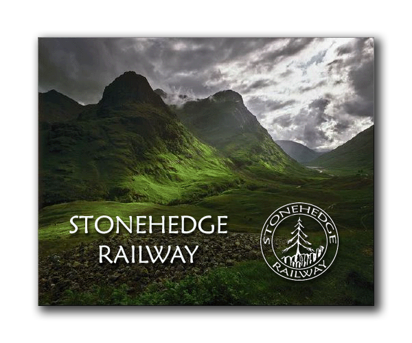

 2020..what a year it's been so far! crazy times. I've gotten a much later start on the garden railroad because of "the current state of world events" in early 2020. I'm working much more than normal! My regular 40 hours, plus quite a bit of overtime, mainly setting up computer systems so hundreds of my co-workers can work from home, but i'm not working from home! which is fine.. I'm not complaining. If you saw the end of the 2019 page, you know we ended on a very sad note. Our beloved Mr. Calvin is no longer with us. :( I'll talk about that some more in the first few videos. Here is the first update of the year, Video 58, April 11 2020: Video 59, June 6, 2020. And some more photos
of the "Mister Calvin Memorial run"
 


June 6, 2020.
Continued... After the "Mister Calvin Memorial Run", I parked the train and began some construction work on the railroad, the first work for 2020. I began working in what will be the "large wood trestle and upper pond and waterfall" area. As I said in the video, I sprained my lower back at work moving (literally) thousands of PC and monitor boxes over the past few months, imaging and shipping out PC's, and my vertebrae have declared "We are 51 years old, and we are no longer doing any heavy lifting anymore..at all..ever.." So, i'm going to listen to them! ;) I borrowed a large moving dolly to gently move the cinder blocks in to place. these will be the support of the large curved wood trestle. 
 
   
 The strings have bolts tied to the bottom, acting as plumb bobs. They are descending from the center-point of the track, to help center the cinder blocks below.  
June 30, 2020.
Emma Hoot hangs out in the garden railroad:  June 1, 2020.
The new Engine House is complete! I scratch-built a new roof: The Engine House is Pola-LGB kit No. 911. 
The Engine House originally comes with a "European" style roof (probably German inspired, since both LGB and Pola are German), here is a photo I found on ebay of the stock roof configuration:  But, I didn't want
that style of roof, I wanted more of an
"American style" engine house roof. I was
lucky to find a used enginehouse on ebay, without
the roof! :) perfect! just what I
wanted. here is my enginehouse as I received
it:
 I determined the angle
of my new roof, the cut off part of the
front and rear walls to match:
 Then a new roof was
scratch-built using thin foam insulation as
the base:
 I then scratch-built a
new brick panel to fill the gap, and I found
a 1/12 scale round dollhouse window, and
painted it green.
  Thicker 1" pink foam
was glued to the underside for rigidity,
(not visible in the photos), then I cut and
screwed some surplus asphalt shingles that
came with the house when we bought it (I
assume left over from the last time the
house had a new roof). The end result, just
as I had envisioned it! :) I was very
pleased with how it turned out:
  July 5, 2020.
Video 62: a change in plans, a new direction for the west platform: And more photos from
July 5th:
     July 12, 2020 Starting on the pond in its new location. The pond is placed where the water mill used to be, (the water mill was only in that spot for a month or so.) The large wood edge is cut down to ground level, and dirt is filled in around the pond, and some ground cover is planted.      Return to the main Stonehedge Railway page. Return to Scot's main page. |
||
 |